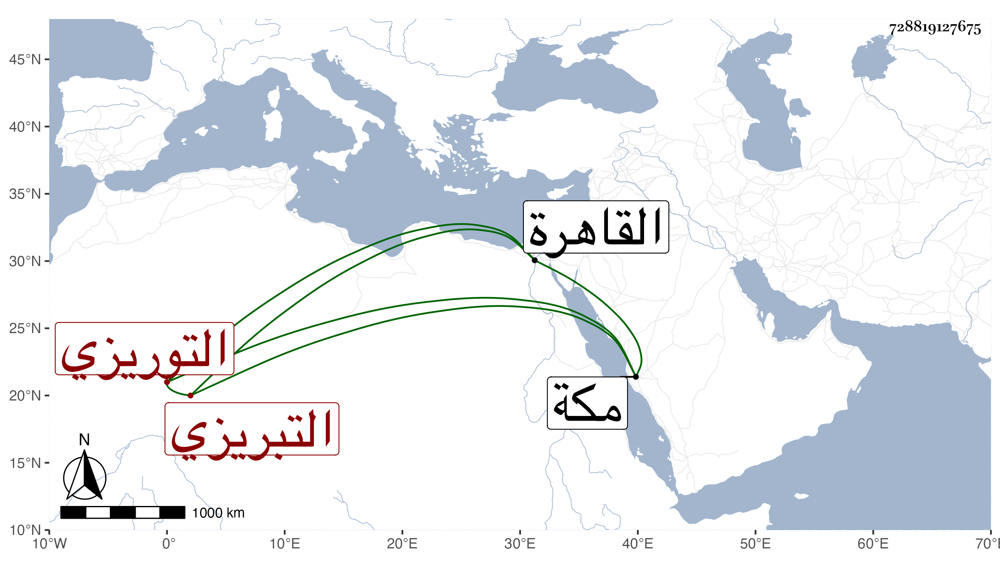

0902Sakhawi.DawLamic.ITO20230111-ara1.EIS1600.728819127675
Biography ID: 728819127675
244
أبو بكر بن محمد بن محمد بن يوسف بن حاجي التبريزي والعامة تقوله التوريزي . أحد أعيان التجار وأخو الجمال محمد والنور على وله فيه ذكر ويعرف بابن بعلبند حج في سنة ست وعشرين رفيقا لعبد الباسط وقدم معه في ثامن التي تليها وهو تاجر السلطان وصاحب الأماكن التي استجدها برحبة الأيدمري وقد رافع فيه التاجر تاج الدين بن حتى بحيث ضربه السلطان في سنة خمس وخمسين وأمر بإدخالهما المقشرة ثم بنفيهما ولكن حصل استرضاء السلطان وأخذت منه داره التي أنشأها بمكة . وأقام بالقاهرة حتى مات في خامس شعبان سنة تسع وخمسين .
